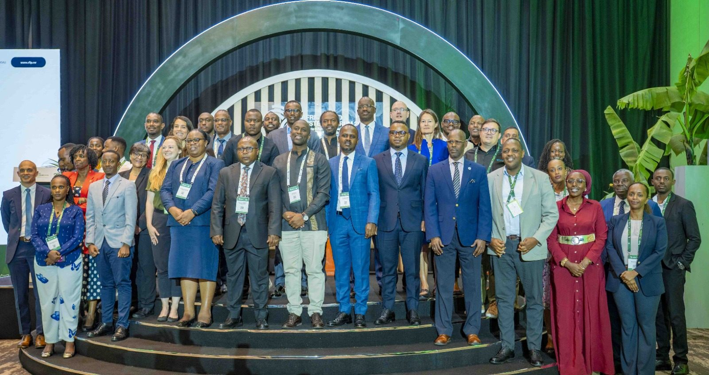
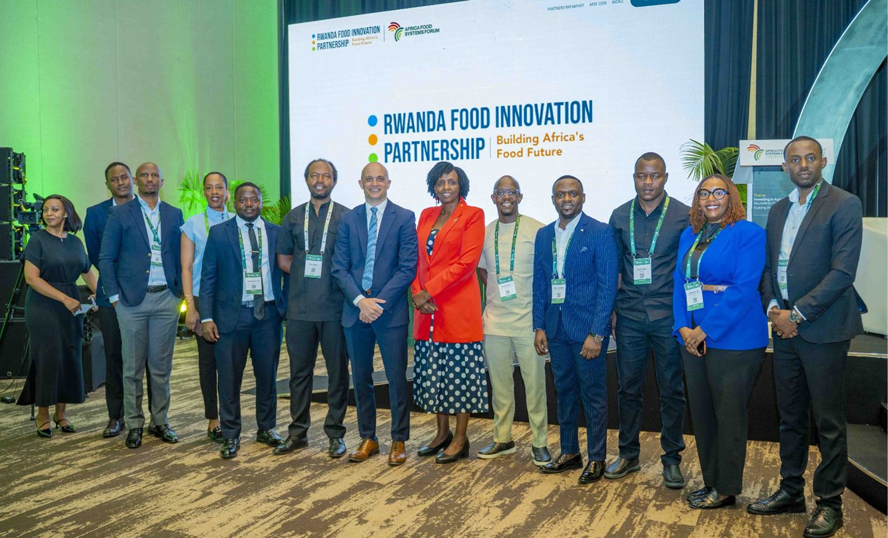
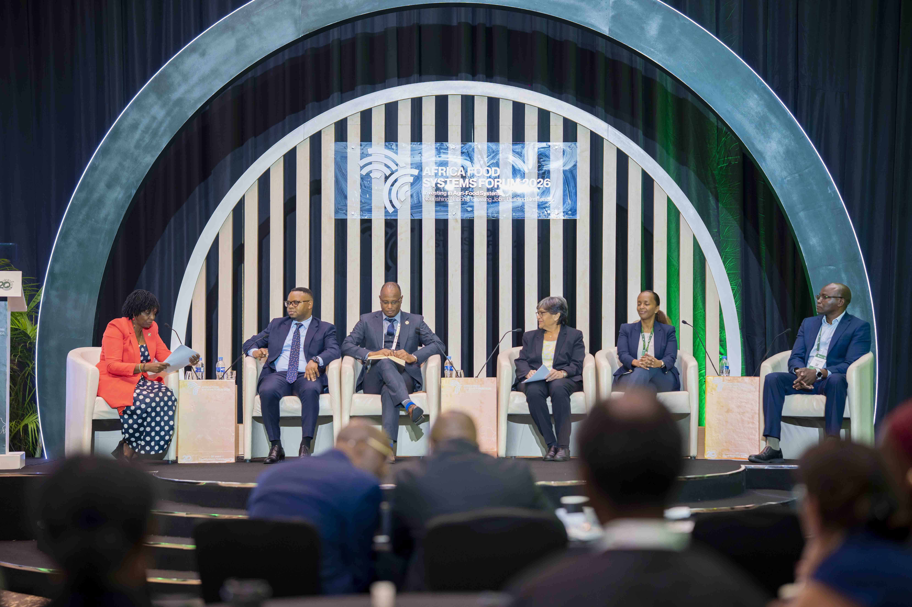
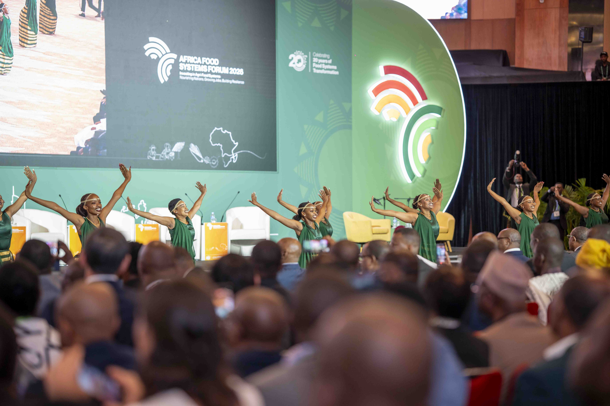
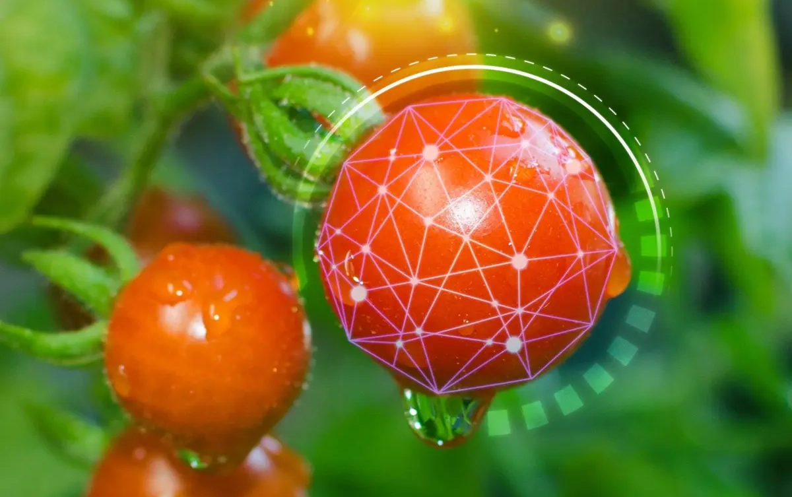
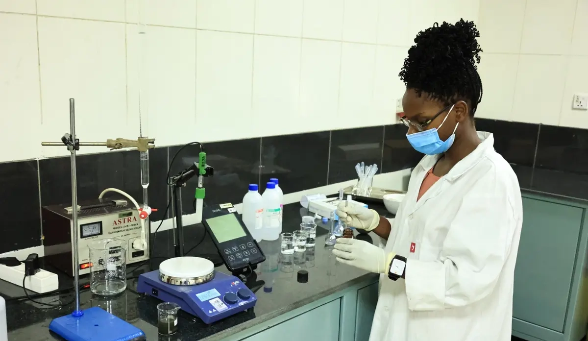
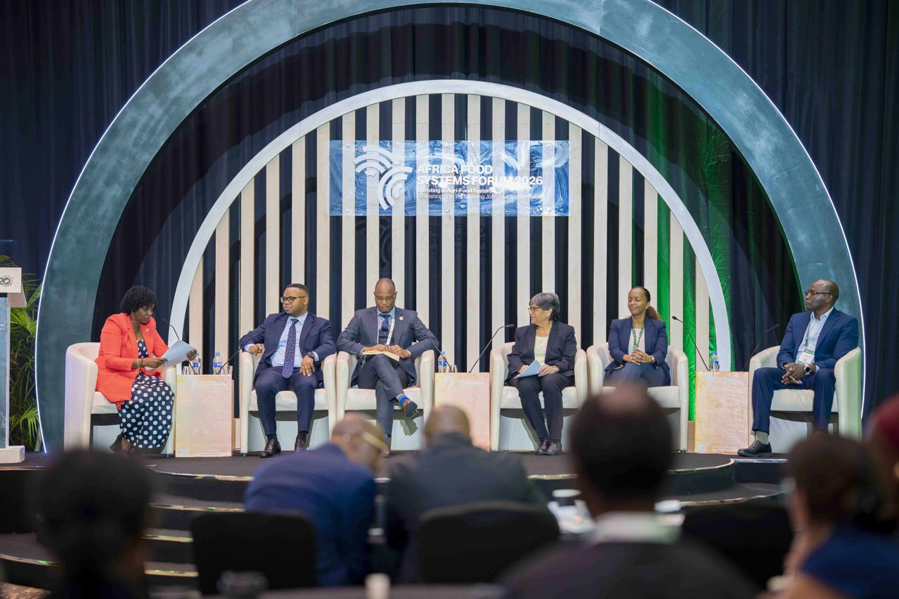

Quarterly Newsletter · Issue 01 · November 2026

Innovating for Rwanda and the Continent
Building Rwanda’s food innovation ecosystem and connecting ideas, partners and markets across Africa.
A NOTE FROM THE RFIP SECRETARIAT
Dear partners and friends,
Welcome to the very first edition of the RFIP Quarterly Newsletter. September marked a defining moment: RFIP was officially launched at the Africa Food Systems Forum in Kigali, under the leadership of the Government of Rwanda, bringing together the public sector, private sector, research and academia, development partners and civil society behind one shared ambition—to make Rwanda Africa’s leading destination for food systems innovation by 2035.
Food systems everywhere are under pressure from climate change, shifting diets, population growth and the need for more resilient supply chains. No single institution can respond alone. RFIP exists to turn fragmented effort into coordinated action, moving good ideas from the lab to the market, and from Rwanda to the continent.
In this issue we look back on the launch, share what we heard at our first Get to Know RFIP session, introduce partners already building with us, highlight news from across Rwanda’s food innovation ecosystem, and invite you to the next conversation on 25 November.

With thanks,
Adam Gerstenmier
Team Lead, RFIP Secretariat
LAUNCHED AT THE AFRICA FOOD SYSTEMS FORUM
On Wednesday, 2 September 2026, the Rwanda Food Innovation Partnership and the RFIP Partners Group were officially launched at AFSF in Kigali, under the leadership of the Government of Rwanda, introducing RFIP to a continental audience shaping the future of Africa’s food systems.
RFIP is a government-mandated, multi-stakeholder platform connecting Rwanda’s research institutions, regulatory bodies and private sector into one navigable pathway, so innovations can move from development to market. It is the vehicle for implementing the Rwanda Food Innovation Ecosystem Strategy (2026–2035).
The launch was led by Hon. Dr. Telesphore Ndabamenye, Minister of Agriculture and Animal Resources, and Hon. Dr. Solange Uwituze, Minister of State, Ministry of Agriculture and Animal Resources, joined by the Minister of State for ICT and Innovation, alongside speakers from AGRA, the Gates Foundation, GAIN, JASIRI, One Acre Fund, Oath Africa and SunCulture.
It followed Cabinet approval of the Strategy on 24 July 2026. Around 100 participants from more than 50 institutions attended. Founding partners who had submitted Expressions of Interest were recognized, and Government announced the RFIP Partners Group as a standing platform across five constituencies: the public sector, private sector, research and academia, development partners and civil society.
 “The window to partner with the Rwanda Food Innovation Partnership remains open, and the Secretariat is ready to engage with and facilitate you. The Rwanda Food Innovation Partnership is a window to the continent, and through it Africa will see what works, and scale it. As always, we say: let there be food, money and jobs.” Hon. Dr. Telesphore Ndabamenye
“The window to partner with the Rwanda Food Innovation Partnership remains open, and the Secretariat is ready to engage with and facilitate you. The Rwanda Food Innovation Partnership is a window to the continent, and through it Africa will see what works, and scale it. As always, we say: let there be food, money and jobs.” Hon. Dr. Telesphore Ndabamenye
Minister of Agriculture and Animal Resources
RFIP backs food innovations that deliver
The result: improved food security and nutrition, dignified jobs, and economic transformation for Rwanda and the continent.
RFIP GALLERY
.jpeg)
.jpeg)
.jpeg)
.jpeg)
.jpeg)
.jpeg)
.jpeg)


FOUR ACCELERATORS, ONE ECOSYSTEM
RFIP’s programs are taking shape around four accelerators, each tackling a different barrier between an idea and impact at scale.

Policy & Regulatory Accelerator
A predictable pathway to market.
Designing the Food Innovation Regulatory Sandbox, supporting policy reform and building regulator capacity.
Target: under 60 days from complete dossier to decision, and 50+ sandbox pilots by 2035.
Investment Accelerator
The most enabling place in the region to test global food innovation.
Dedicated private-sector facilitation, mobilizing 50+ agri-food companies to test, adapt and scale innovations, and connecting projects to financiers and co-investors.

Venture & SME Accelerator
Rwanda’s next generation of food innovators.
Venture support scaling to 25+ ventures a year, raising commercialization and startup survival rates.
Human Capital Accelerator
Building the talent the economy requires.
A skills pipeline delivering 500+ graduates and 200+ trained regulators and professionals a year by 2035, with global university partnerships and R&D infrastructure.
INVESTMENT
This accelerator helps leading African and global food innovation companies test and scale in Rwanda. Over five years it aims to mobilize and accompany at least 50 private investments worth more than USD 50 million. This work will include a dedicated facilitation function at the Rwanda Development Board, targeted investment promotion and matchmaking, and catalytic co-financing with existing financiers.
Companies already engaged
- SunCulture agreed a public-private partnership model with MINAGRI for solar-powered irrigation, with field visits in October, community pilots in the first half of 2027 and a national-scale deployment decision by June 2027.
- Oath Africa, a Rwandan biological-inputs company, is working with Government on registration of its soil-health products.
- Ohalo Genetics has opened discussions on bringing True Potato Seed trials and commercialization to Rwanda.
With RDB, RFIP is preparing investor briefs on soil health and circular economy, irrigation, protein systems, AI and digital agriculture, alongside a single front door for food innovation investors. Companies with proven innovations can contact RFIP@minagri.gov.rw.
Next issue: the Policy & Regulatory Accelerator and Africa’s first Food Innovation Regulatory Sandbox, to be communicated in February 2027. Explore the accelerators at rfip.rw/programs.
GET TO KNOW RFIP: ONE CALL HELD, MORE TO COME
Following the launch, RFIP hosted its first virtual information and exchange session on Wednesday, 23 September 2026. The one-hour call introduced RFIP and ways organizations can engage, covering the Rwanda Food Innovation Ecosystem Strategy and priority domains, the four accelerators, the RFIP Partners Group, and opportunities for collaboration.
Participants included AGRA, the African Food Fellowship, Ohalo Genetics, Solid Africa and Swisscontact Rwanda, spanning development partners, research and leadership programs, agri-tech and implementing organizations.
How RFIP fits with existing platforms
RFIP does not replace what already exists. As a multi-stakeholder platform, it seeks to support the delivery of existing programs and initiatives and to leverage opportunities for co-creation. It is mandated to look ahead at the next generation of food—from production and value chains to consumer demand and resilience to global shocks—and connect ecosystem actors who can deliver it.
What partners give and get
There are no fees or minimum contribution during the 2026–2027 foundation phase; in-kind support counts the same as funding. Each partner commits to one meaningful action a year that moves the Strategy forward. Partners gain one front door to government, regulators, researchers and investors, a seat in co-designing the accelerators, and a place in Rwanda’s food innovation story.
How to join
Send a one- to two-page Expression of Interest addressed to the Hon. Minister of Agriculture and Animal Resources via RFIP@minagri.gov.rw. The Secretariat shares a template on request and follows up within two weeks. Intake is rolling and reviewed every two months.
Curious about what we are doing? Join the next session, open to anyone interested in advancing food innovation across Rwanda and Africa.
Get to Know RFIP: Virtual Call #2
Time: 4:00–5:00 pm CAT
Where: Online, Microsoft Teams
Open to: public sector, private sector, research and academia, development partners and civil society
Register HereRFIP PARTNERS GROUP
RFIP is built on partnership. Launched at AFSF, the Partners Group brings together 35 founding partners who have signed Expressions of Interest, working alongside government ministries and regulators. Partners contribute technology, research, expertise, investment, networks or implementation support.
Eleven founding partners have co-created detailed partnership action plans with the Secretariat, each anchoring an accelerator or priority innovation domain. These include: ACES, AGRA, GAIN, JASIRI, Kivu Choice, the Natural Resources Institute at the University of Greenwich, Oath Africa, Rwanda Green Fund, One Acre Fund, RICA and SunCulture.

OUR PARTNERS
Government ministries and regulators

Founding partners


.webp)


RFIP PARTNER SPOTLIGHT
About: A talent investor and program of Allan & Gill Gray Philanthropies that backs exceptional individuals to build high-growth ventures from scratch. Since 2021, it has supported 277 entrepreneurs to start 116 companies across Ethiopia, Kenya and Rwanda, and is an RFIP Founding Partner.
Milestone: In January 2027, JASIRI plans to launch its first dedicated agri-food cohort of 30-50 ventures from Ethiopia, Kenya and Rwanda, with a three-month residential intensive in Kigali. RFIP will contribute technical expertise, ecosystem connections, and gather insights to inform policy and regulatory reforming. This effort advances RFIP's ambition to enable innovators to test, build and scale commercially viable solutions in Rwanda and across the continent.
About: Founded in 2012, SunCulture is Africa's largest solar irrigation company. It designs, sells, installs, finances and services solar-powered irrigation systems through a fully integrated model. SunCulture is now establishing in Rwanda to support the Government of Rwanda's irrigation scaling ambitions.
Milestone: In August 2026, SunCulture signed a Memorandum of Understanding with the Ministry of Agriculture and Animal Resources (MINAGRI) to establish and scale up solar irrigation in Rwanda.
FOOD INNOVATION IS MOVING IN RWANDA
Much is happening in food innovation in Rwanda: some of it with RFIP’s support, and much of it well beyond us, led by individual partners, companies and institutions. Here are a few items that caught our eye this quarter.
C4IR seeks partners to develop an AI for agriculture solution
The Centre for the Fourth Industrial Revolution Rwanda has issued a call for expressions of interest from partners to develop an AI-enabled agricultural advisory solution.
Rwanda Bioeconomy Fund launches and backs its first companies
Capitalized by the European Commission and the German government, the Fund’s first cohort of four companies spans waste management, pharmaceuticals, women’s health and agricultural inputs. RFIP partner Oath Africa welcomed the support.
Read moreJASIRI Talent Investor Cohort 9 is dedicated to food systems
A fully funded 13-month programme for young entrepreneurs from Kenya, Rwanda and Ethiopia. It starts with an online Jumpstart from 18 January 2027, followed by a three-month residential intensive in Kigali.
Read moreRwanda’s first agriculture venture studio opens applications
Pharo Venture Studio Kigali offered a five-week Founder Residency to build new agriculture ventures, with selected founders able to access up to USD 150,000 in direct investment. Applications closed on 11 October 2026.
Read moreNew Development Cooperation Policy 2026–2050 includes a focus on agri-food systems
Approved by Cabinet on 18 September, the policy replaces the 2006 Aid Policy and sets a 25-year framework for how Rwanda works with development partners. It includes a flagship focus and a working group on Agri-food Systems and Environmental Sustainability.
Read moreRFIP SO FAR
Cabinet approves the Rwanda Food Innovation Ecosystem Strategy (2026–2035) and the establishment of RFIP.
RFIP and the RFIP Partners Group officially launched at the Africa Food Systems Forum, Kigali.
RFIP online platforms go live, including the website and social media channels.
First Get to Know RFIP virtual information and exchange session.
Initial accelerator programs get under way.
Second Get to Know RFIP virtual call.
HELP BUILD AFRICA’S FOOD FUTURE
Whether you bring technology, research, expertise, investment, networks or implementation support, there is a place for you in RFIP. Please share this newsletter with a colleague who should be part of the conversation.